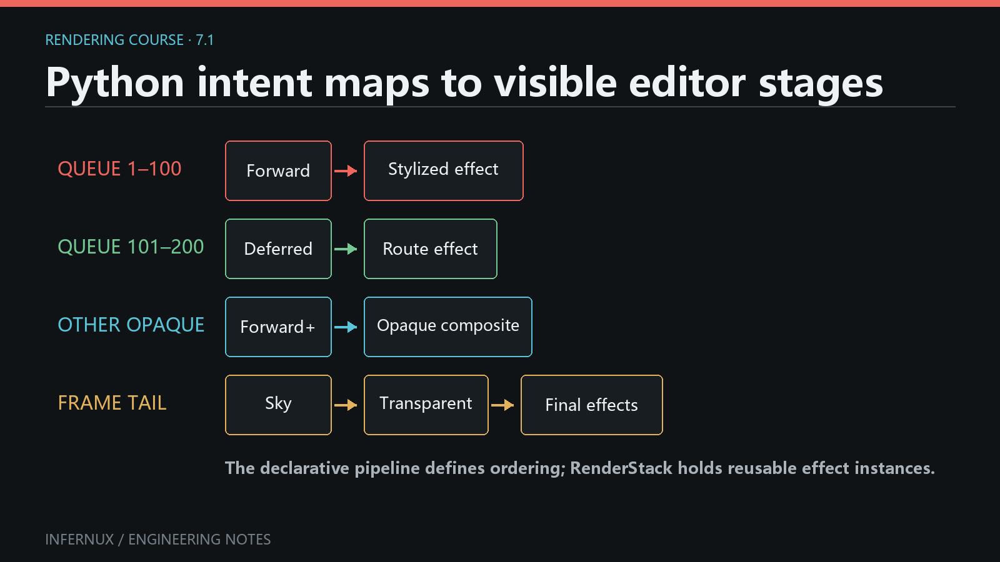

Custom Rendering · Chapter 7
Build a custom render pipeline
For most custom pipelines, start with the Python RenderPipeline.define() DSL. It describes frame policy, Material Queue ownership, render paths, composition order, and Effect mount points. The base class lowers that definition into a RenderGraph. Chapter 8 covers the lower-level define_topology(graph) API for techniques that need explicit resources and passes.
Create the minimal Forward pipeline, select it on a RenderStack, and confirm that the baseline Cube, sky, transparent objects, and UI remain visible. A clean Console and a selectable pipeline complete the first pass. Mixed paths, Queue ownership, recovery, and serialized parameters extend that working baseline.

Discover and select a pipeline
Create Assets/Rendering/simple_forward_pipeline.py in the project. No registry call or package __init__.py is required: discovery scans the Assets tree for .py files, reads class inheritance without importing unrelated scripts, then imports files that lead to a RenderPipeline subclass. Indirect subclasses and subclasses of the built-in pipelines are included. Files whose names start with _, hidden directories, and common build or virtual-environment directories are skipped.
The class needs a non-empty name that does not start with _:
from Infernux.renderstack import RenderPipeline
class SimpleForwardPipeline(RenderPipeline):
name = "Simple Forward"
def define(self, pipeline):
...
The file imports the public base directly from Infernux.renderstack; do not import it through another project script solely to trigger registration. After saving the file, wait for the asset refresh to finish, select the GameObject that owns the scene's RenderStack component, then choose Simple Forward from Pipeline in the RenderStack Inspector. Save the scene after the topology appears. The list shows name; the Python class name stays in code.
These names have different jobs:
SimpleForwardPipelineis the Python class name. It identifies the implementation in code.name = "Simple Forward"is the discovery key, Inspector label, saved pipeline selection, and key for saved pipeline parameters. Keep it unique and stable. Two classes with the samenamecollide in the discovery dictionary; renaming it makes existing scenes look for the old selection.- Strings passed to
effects(), such as"after_opaque", are EffectStage stable IDs. They bind saved Effect slots to topology. A stagelabelmay change without breaking that binding; changing its stable ID leaves the old slots orphaned until they are remapped.
There is currently no separate stable-ID field for a pipeline. Despite the serialized field name pipeline_class_name, RenderStack stores the pipeline's name value.
If a candidate module fails to import, Editor discovery keeps the rest of the catalog available and omits the broken class until the script is fixed. Saving, creating, moving, or deleting a pipeline script invalidates the catalog; the active pipeline source is also watched for reload in the Editor.
Use the Editor Console to separate import failures from catalog problems. This diagnostic reads the same discovery functions used by RenderStack:
from Infernux.renderstack.discovery import (
discover_pipelines,
discovery_import_failures,
)
print(sorted(discover_pipelines()))
print(discovery_import_failures())
An import failure entry is keyed by source path and includes the exception type and message. An empty failure map plus a missing name usually means the file was skipped, the class inheritance was not recognized, or name is empty or begins with _.
Duplicate pipeline names have a narrower current diagnostic boundary. Discovery stores {pipeline.name: class} and a later subclass silently replaces an earlier class under the same key. The Pipeline menu shows one entry and emits no collision diagnostic or candidate list. To identify the selected winner in the Console, run:
import inspect
from Infernux.renderstack.discovery import discover_pipelines
pipeline_type = discover_pipelines()["Simple Forward"]
print(pipeline_type.__module__, inspect.getsourcefile(pipeline_type))
Give every project pipeline a unique, stable name. After a rename, select the new name and save the scene again; the old saved selection and its parameter-store key are not migrated automatically.
A minimal pipeline
from Infernux.renderstack import RenderPipeline
class SimpleForwardPipeline(RenderPipeline):
name = "Simple Forward"
def define(self, pipeline):
pipeline.frame(hdr=True, msaa=4)
pipeline.shadows(resolution=4096)
pipeline.lighting(clustered=False)
with pipeline.opaque() as opaque:
opaque.otherwise().forward()
pipeline.effects("after_opaque", label="After Opaque")
pipeline.sky()
with pipeline.transparent() as transparent:
transparent.otherwise().forward()
pipeline.effects("final", label="Final Post Processing")
pipeline.screen_ui()
define() records operations in order. screen_ui() must be the final DSL operation; it closes the standard Camera UI, post-process, display-encoding, and Screen UI tail. frame() accepts MSAA values 1, 2, 4, or 8. lighting(clustered=True) prepares the light data used by Forward+ routes.
This is the high-level API. Direct graph.create_texture() and graph.add_pass() calls belong in define_topology(graph): the argument to define() is a PipelineBuilder. Choose one entry point for a pipeline.
Verify and recover
Use a small scene with an active Camera, one RenderStack, one visible opaque renderer whose Material Queue is inside 0..2500, and one visible transparent renderer whose queue is inside 2501..5000.
- Select Simple Forward. Both renderers should remain visible, and the RenderStack topology should list After Opaque and Final Post Processing.
- Temporarily remove the transparent block, save the pipeline, and let the active pipeline reload. The transparent test renderer should disappear while the opaque renderer remains. Restore the block and save again.
- Change
nameonly as a separate migration test. The old selection will fall back because RenderStack serializes the display name; choose the new entry and save the scene. - Make one reversible syntax error and save. The script transaction rejects the new module. Check the Console, repair the file, and save again.
The recovery result depends on when failure occurs. A rejected script import does not publish the edited module. If a published topology rebuild then fails and this RenderStack already has a valid graph, the Console reports Pipeline graph rebuild rejected and the last valid graph keeps rendering until another invalidation. On the first Editor build, failure attempts DefaultForwardPipeline; a packaged Player reports the missing or failed custom pipeline and does not substitute Default Forward. Fixing and saving the active source invalidates the failed state and requests another build.
Mix Forward, Forward+, and Deferred
from Infernux.renderstack import Path, Queue, RenderPipeline
class MixedArtPipeline(RenderPipeline):
name = "Mixed Art Pipeline"
def define(self, pipeline):
pipeline.frame(hdr=True, msaa=4)
pipeline.shadows()
pipeline.lighting(clustered=True)
with pipeline.opaque() as opaque:
with opaque.layer("Stylized Objects") as layer:
layer.forward(
Queue(1, 100),
).effects("low_queue", label="Stylized Forward")
layer.deferred(
Queue(101, 200),
fallback=Path.FORWARD_PLUS,
).effects("middle_queue", label="Deferred Objects")
layer.effects("stylized_combined", label="Stylized Combined")
opaque.otherwise().forward_plus()
opaque.effects("opaque_only", label="All Opaque")
pipeline.effects("after_opaque", label="After Opaque Composite")
pipeline.sky()
with pipeline.transparent() as transparent:
transparent.otherwise().forward_plus()
pipeline.effects("final", label="Final Post Processing")
pipeline.screen_ui()
Forward, Forward+, and Deferred select render paths; all three use the same material language. A compatible ShadingModel keeps the same shading() implementation. With MSAA greater than 1, a Deferred route must declare fallback=Path.FORWARD or Path.FORWARD_PLUS; the compiler uses that fallback for the whole route.
Route effects see the route result. A layer effect sees the routes combined in that layer, a domain effect sees the domain result, and pipeline.effects() sees the accumulated scene composite at that position.
Queue and otherwise rules
Material Queue values are inclusive integers from 0 through 9999, while the high-level DSL currently exposes two fixed domains: opaque is 0..2500, and transparent is 2501..5000. A selector must fit completely inside its domain. For example, Queue(2400, 2600) is rejected in both domains, and queues above 5000 have no standard domain in this DSL.
- Explicit Queue ranges cannot overlap anywhere in the same domain. Routes inside different layers still share that domain's ownership table.
forward()orforward_plus()without aQueueselects the whole domain. It therefore cannot coexist with another explicit route in that domain.- When a domain has no
otherwise()route, unclaimed Queue values are left undrawn. otherwise()computes the complement of every explicit claim in the domain. It can produce several disjoint segments, all rendered by the one otherwise route.- Only one
otherwise()route is allowed across a domain, including all of its layers. Its position still controls when its contribution is composed; Queue ownership comes from the domain-wide complement. - EffectStage stable IDs must be unique across the whole pipeline.
For example, explicit claims Queue(1, 100) and Queue(201, 300) in the opaque domain make otherwise() own 0, 101..200, and 301..2500. The compiler rejects overlapping or out-of-domain ownership while building the topology.
Two failure probes make the edge behavior reproducible:
with pipeline.opaque() as opaque:
opaque.forward(Queue(1, 100))
opaque.forward_plus(Queue(100, 200)) # ValueError: routes overlap
The shared endpoint 100 is enough to overlap because ranges are inclusive. Queue(20, 10) is rejected when the selector is created because its minimum exceeds its maximum.
with pipeline.opaque() as opaque:
opaque.forward(Queue(0, 2500))
opaque.otherwise().forward_plus() # accepted, complement is empty
An empty otherwise() complement is currently accepted and contributes zero draw segments. Its route operation and any attached EffectStage can still be compiled, so remove an empty route instead of relying on it as a disabled branch. A domain with no routes also draws none of that domain; later sky, effects, and the frame tail can still run.
Pipeline parameters
Pipeline policy can be edited below the selected pipeline in the RenderStack Inspector:
from enum import IntEnum
from Infernux.components.fields import serialized_field
from Infernux.renderstack import RenderPipeline
class Samples(IntEnum):
OFF = 1
X2 = 2
X4 = 4
X8 = 8
class AdjustablePipeline(RenderPipeline):
name = "Adjustable Pipeline"
msaa: Samples = serialized_field(
default=Samples.X4,
enum_labels=["Off", "2x", "4x", "8x"],
header="Anti-Aliasing",
)
def define(self, pipeline):
pipeline.frame(hdr=True, msaa=int(self.msaa))
with pipeline.opaque() as opaque:
opaque.otherwise().forward()
pipeline.screen_ui()
RenderStack saves parameter values under the pipeline name. A parameter edit invalidates the graph so topology and per-camera resources can be rebuilt. Values that belong to an Effect, such as intensity or tint, should remain in the .effect asset; changing them should not require a pipeline rebuild.
Queue routing, route/layer/domain effects, sky, shadows, lighting policy, and the standard frame tail belong in define(). Move to define_topology(graph) when the technique needs a resource or pass relationship outside that vocabulary.